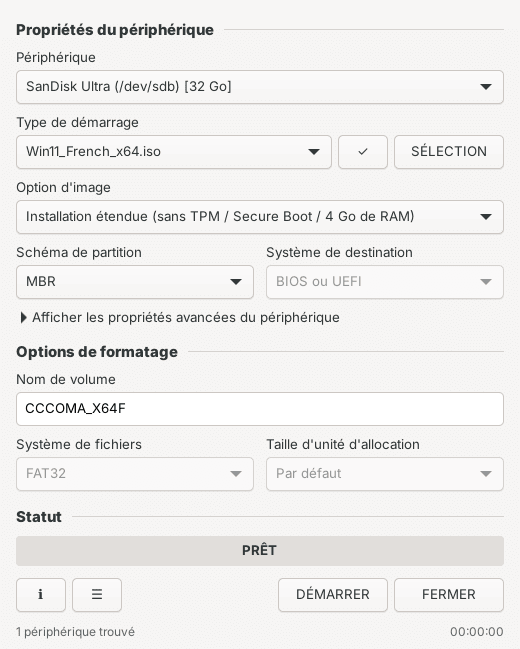
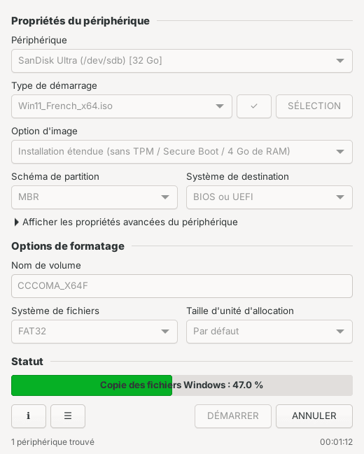

Windows 7 → 11
- MBR (BIOS ou UEFI) ou GPT (UEFI), FAT32
install.wimde plus de 4 Go découpé automatiquement- Démarrage BIOS via GRUB →
bootmgr - « Installation étendue » : sans TPM, Secure Boot ni 4 Go de RAM
v2.0.0 · GTK 4 · MIT
LinXfus crée des clés USB bootables Windows, macOS et Linux dans une fenêtre qui reprend celle de Rufus : périphérique, image, options, DÉMARRER. Il reconnaît l'image tout seul et refuse de toucher à ton disque système.
curl -fsSL https://raw.githubusercontent.com/Joss943/Linxfus/main/install.sh | sudo bash
Une seule fois. Ensuite, ouvre LinXfus dans tes applications, comme n'importe quel logiciel. Fedora, Ubuntu, Debian 13, Arch.


install.wim de plus de 4 Go découpé automatiquementbootmgr.img, .xz, .gz, .zst (Raspberry Pi…)createinstallmedia depuis un Mac.Le moteur s'utilise aussi seul, pour les scripts : sudo linxfus -i Win11.iso -d /dev/sdb --win11-bypass. Tout est dans linxfus --help.